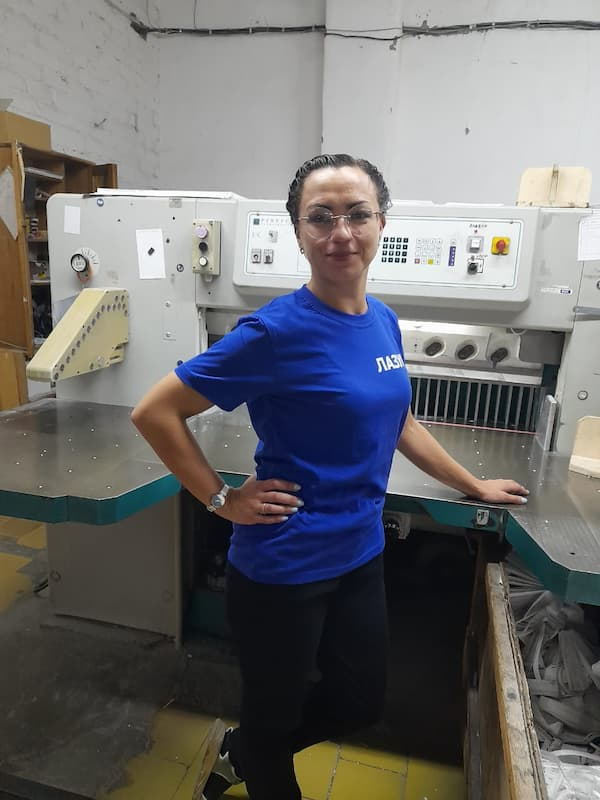
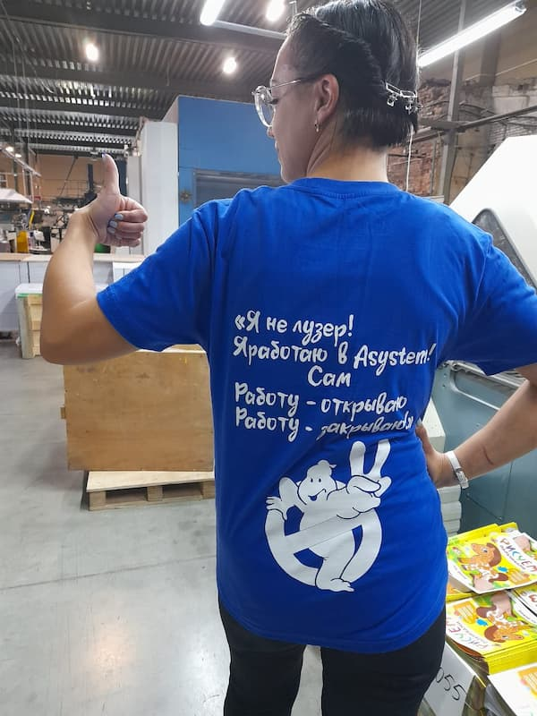

В типографии «ИПК Лазурь» мы реализовали особенный проект — выпустили партию фирменных футболок с текстом, который отражает наш подход к работе и ценность каждого сотрудника.

Надпись на футболках гласит:
«Я не лузер!
Я работаю в Asystem!
Сам
Работу - открываю
Работу - закрываю»
Этот текст был разработан при участии наших сотрудников и символизирует:
Наши коллеги высоко оценили эту инициативу:
«Точные и мотивирующие слова — чувствуется, что нас ценят и понимают», — отмечает печатник производственного цеха.
Технолог добавляет: «Asystem помогает нам работать как единый механизм, а такие акции напоминают о важности каждого в этом процессе».
Хотите стать частью нашей команды?
Мы всегда рады целеустремленным специалистам, готовым развиваться вместе с нами!
ИПК Лазурь: вместе создаем качество!
P.S. Следите за нашими новостями — в планах новые проекты по укреплению корпоративной культуры!